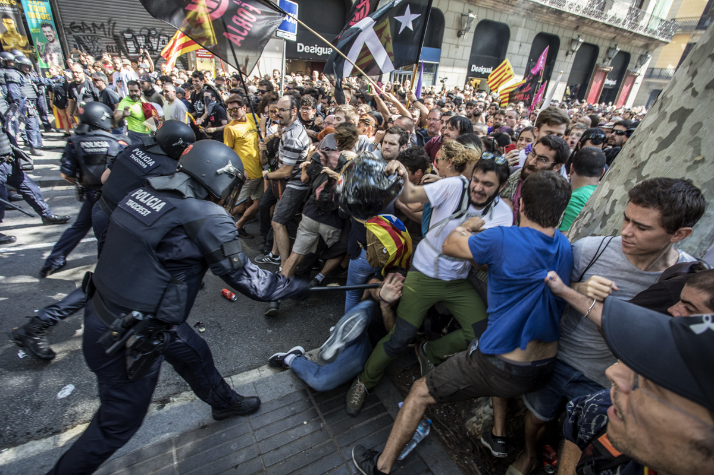

Camp Nou during the behind-closed-doors match (Image: Local Archive)

Clashes and voting scenes on the streets of Catalonia during the match (Image: Local Archive)
By: Albert Ponferrada Sicart, Spring 2025 Final Blog Post

Barça fans at Camp Nou holding estelades during a pro-independence rally (Image: Local Archive)
On October 1, 2017, FC Barcelona had to play an empty Camp Nou during a time when Catalans attended a poll which Spanish authorities declared unlawful. The absence of fan noise was not caused by disinterest in the match. The move symbolically protested the situation. The club’s board had requested to postpone the game but La Liga denied it. The club chose to play the match without spectators in a typical Catalan showing of passive defiance.
Camp Nou during the behind-closed-doors match (Image: Local Archive)
Clashes and voting scenes on the streets of Catalonia during the match (Image: Local Archive)
The match went beyond athletic competition because it contained political meaning. The club has faced numerous times where it had to decide between sporting activities and national independence issues. Barça became the cultural symbol of an autonomous Catalonia in the 1970s as the nation emerged from Francoist oppression, which lasted for forty years. This post investigates how Barça became a political tool for Catalan independence from Franco's death through the 2017 vote despite democratic and economic limitations.
The Catalan language and flag, together with Catalan culture, experienced repression throughout the rule of Francisco Franco (1939–1975). FC Barcelona's home stadium Camp Nou operated as one of the few areas which allowed Catalan supporters to express their language and display the Senyera flag with impunity. Tuñón and Brey (2012) explain how Barça transformed into a place for silent opposition because the club suffered through the Civil War and stood opposite to Real Madrid, which many people regarded as the regime's team.
After Franco passed away in 1975, the 1978 Spanish Constitution established regional autonomy, leading Catalonia to recover its language and institutions. Football followed suit. Barça shifted from being a symbol of victimhood to becoming an active advocate through the leadership and branding, and fan culture of the club, which embraced Catalan nationalism.
The Barcelona slogan Més que un club demonstrates flexible political use. Duran and Safi (2020) explain in their analysis of “strategic ambiguity” how the phrase helps the club reach both global customers and local nationalist groups. During the presidency of Joan Laporta (2003–2010), the club adopted a more noticeable Catalan direction in its operations. The main language used by the club members shifted towards Catalan. The team openly promoted traditional Catalan customs during this period. Under Laporta's leadership, Barça grew beyond its role as a Catalan identity reflection because it actively broadcast Catalan messages.
The Catalan independence flag, known as the estelada became a standard sight at Camp Nou stadium throughout this period. Fans started to sing “Independència!” in the 17th minute and 14th second of matches to commemorate 1714 when Catalonia lost to the Bourbon monarchy. The team never endorsed the chants or tried to stop them from happening. Its silence, again, was strategic.
Fans chant “Independència!” in the 17th minute and 14th second´, a tribute to Catalonia’s fall in 1714. (Video: YouTube)
The Spanish state and Catalonia experienced escalating tensions, which culminated in 2017. The Generalitat under Carles Puigdemont initiated a vote about independence. The referendum took place on October 1 despite Spain’s Constitutional Court declaring it illegal. Spanish police used violent tactics by invading polling stations and causing injuries to more than 1,000 people during the voting day.
The Barcelona team faced Las Palmas on the same day as the referendum occurred. The board requested a postponement that La Liga refused. The club took the initiative to play the match without audience attendance. Gerard Piqué, who plays defense for Barça, described the day as the most depressing moment of his career.
Barça took its stand regarding the upcoming vote by making its intentions known throughout the summer of 2017. The club publicly endorsed the National Pact for the Referendum during May, which supported the Catalan government’s right to decide, although it stopped short of endorsing secession. The club made this subtle yet meaningful gesture as part of its long-standing practice of strategic backing. The team maintained its backing for Catalonia's democratic rights without taking direct action against the government.
Death of Franco. Catalonia begins reclaiming autonomy.
Joan Laporta’s presidency; open embrace of Catalanism at Barça.
Barça signs National Pact for the Referendum.
Empty stadium match vs Las Palmas; referendum protest.
The activist approach at Barça has put their organization in danger. La Liga president Javier Tebas threatened that Spanish competitions would expel Catalan clubs from competition if independence became official in September 2017. He declared that Spain could not survive without Catalonia, but independence would force clubs to leave La Liga. The risk became apparent when nationalistic choices might result in losing your position as a top-tier football team.
The institution’s distinct status emerges from this development. The global appeal of Barça as a brand, along with its financial strength and worldwide fan base and institutional ties to both Catalonia and worldwide markets, distinguishes it from typical nationalist symbols. The situation demonstrates the central conflict within Catalan politics between developing local identity while maintaining international unity.
The main reason Barça differs from regular clubs lies in its continuous creation of history after establishing its legacy. The stadium functions as an essential location for people to express political dissent and maintain collective memories as well as feel proud of their identity in the twenty-first century, when political freedom diminishes in other domains. The stadium at Camp Nou transforms football into an expression of political identity rather than serving as a political avoidance.
The re-Catalanisation of Barça illustrates how football functions as both a weapon for national struggle and a battleground for that fight. The club demonstrates that sports organizations must confront political neutrality while using their platforms to expand nationalistic sentiments within UEFA and La Liga's neoliberal structures.
The modern world of globalized media and corporate systems still allows local histories to be significant because sometimes a club becomes more than just a sports organization.